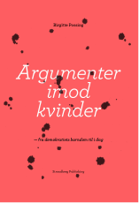
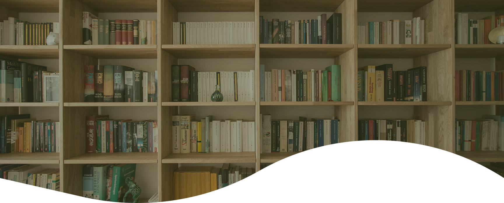
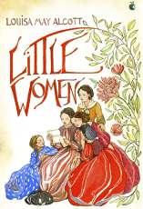

Argumenter imod kvinder
Forfatter: Birgitte Possing
Udgivet: 2018
Læst: August 2026
Bedømmelse: 4,5/5.
Kommentar: Den ragebaiter mig med Joachim B. Olsen citater, men den var velskrevet og inspirerende.

Signes læsehjørne

Forfatter: Louisa May Alcott
Udgivet: 1868
Læst: August 2026
Bedømmelse: 4/5.
Kommentar: Virkelig sød slice-of-life bog med karismatiske karaktere. Bogen ledte meget op til at læse 2'eren.
Forfatter: Christiane Vejlø
Udgivet: 2026
Læst: Juli 2026
Bedømmelse: 5/5.
Kommentar: Jeg må indrømme, at jeg er kæmpe Christiane Vejlø fan, og at jeg fik et signeret eksemplar af bogen.

Forfatter: Birgitte Possing
Udgivet: 2018
Læst: August 2026
Bedømmelse: 4,5/5.
Kommentar: Den ragebaiter mig med Joachim B. Olsen citater, men den var velskrevet og inspirerende.
Forfatter: Morten Münster
Udgivet: 2017
Læst: August 2026
Bedømmelse: 3,5/5.
Kommentar: Den var meget spændende, og jeg kunne relatere mere til mine UX-kompetencer.
Forfatter: Christiane Vejlø
Udgivet: 2026
Læst: Juli 2026
Bedømmelse: 5/5.
Kommentar: Jeg må indrømme, at jeg er kæmpe Christiane Vejlø fan, og at jeg fik et signeret eksemplar af bogen.
Forfatter: Emily Brontë
Udgivet: 1847
Læst: Maj 2026
Bedømmelse: 3/5.
Kommentar: Dyster på den fede måde. Jeg havde forventet kærlighed, men i stedet fik jeg misundelse og hævn.
Forfatter: Jane Austen
Udgivet: 1813
Læst: Maj 2026
Bedømmelse: 4/5.
Kommentar: Fængende og romantisk! Bedre end filmen.
Forfatter: Nicklas Brendborg
Udgivet: 2021
Læst: April 2026
Bedømmelse: 3/5.
Kommentar: Jeg lærte en masse, men jeg må indrømme, at jeg ikke interesserer mig så meget for biologi.